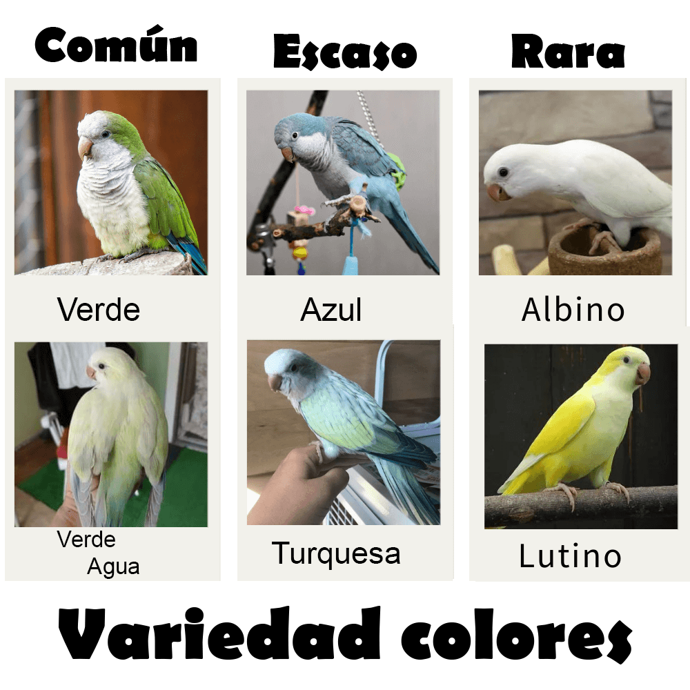

Mutaciones de la cotorra argentina
Los grandes aficionados a la cría de cotorras argentinas no pueden resistirse a la enorme variedad que existen de mutaciones.
Las cotorras argentinas permiten una gran variedad de colores, sin modificar su genética e incluso, brindando con cada generación ejemplares más estilizados y mucho más sociabilizados. Teniendo como resultado un loro casi perfecto, de colores exóticos y una mascota excelente.
